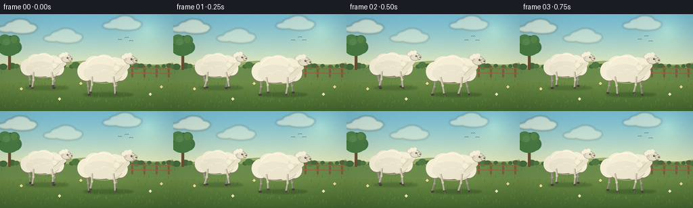
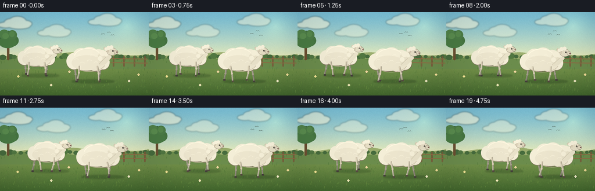
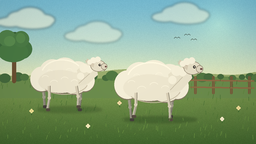
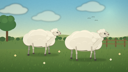

CODING AGENTS AS PIXEL WORLD MODELS
traex/DeepSeek-V4.1-Flash · instance_preservation_0016
点击播放 · 原生 RGB 像素
逐轮保存的候选
回放视频、检查图与代码变化。
每份候选均可单独播放。实际图片检查记录在下方工具轨迹中。
候选 01播放与检查图
点击播放 · 原生 RGB 像素


展开代码变化
--- 上一保存版本
+++ 本次保存版本
@@ -0,0 +1,651 @@
+from pathlib import Path
+import math
+import random
+
+import numpy as np
+from PIL import Image, ImageDraw, ImageFilter
+
+import artifact_io
+
+
+WIDTH = 256
+HEIGHT = 144
+FPS = 4
+FRAME_COUNT = 20
+SCALE = 4
+
+
+def mix(a, b, t):
+ return tuple(round(a[i] * (1.0 - t) + b[i] * t) for i in range(3))
+
+
+def scaled_point(point):
+ return (round(point[0] * SCALE), round(point[1] * SCALE))
+
+
+def scaled_points(points):
+ return [scaled_point(point) for point in points]
+
+
+def rgba(color, alpha=255):
+ return (*color, alpha)
+
+
+def make_sky():
+ yy, xx = np.mgrid[0:HEIGHT, 0:WIDTH]
+ image = np.zeros((HEIGHT, WIDTH, 3), dtype=np.float32)
+ top = np.array([118, 188, 216], dtype=np.float32)
+ horizon = np.array([226, 232, 190], dtype=np.float32)
+ for y in range(HEIGHT):
+ if y < 78:
+ t = (y / 77.0) ** 1.35
+ image[y] = top * (1.0 - t) + horizon * t
+ else:
+ t = (y - 78.0) / (HEIGHT - 78.0)
+ start = np.array([131, 160, 86], dtype=np.float32)
+ end = np.array([64, 101, 46], dtype=np.float32)
+ image[y] = start * (1.0 - t) + end * t
+
+ sun_x, sun_y = 218.0, 23.0
+ dist = np.sqrt((xx - sun_x) ** 2 + (yy - sun_y) ** 2)
+ glow = np.clip(1.0 - dist / 61.0, 0.0, 1.0) ** 2.1
+ image += glow[..., None] * np.array([34, 31, 14], dtype=np.float32)
+
+ # Fine deterministic grain keeps the large sky and meadow gradients from banding.
+ rng = np.random.default_rng(481)
+ grain = rng.normal(0.0, 1.15, (HEIGHT, WIDTH, 1)).astype(np.float32)
+ image = np.clip(image + grain, 0, 255).astype(np.uint8)
+ return Image.fromarray(image).resize(
+ (WIDTH * SCALE, HEIGHT * SCALE), Image.Resampling.BICUBIC
+ )
+
+
+def draw_cloud_layer(t):
+ layer = Image.new("RGBA", (WIDTH * SCALE, HEIGHT * SCALE), (0, 0, 0, 0))
+ draw = ImageDraw.Draw(layer, "RGBA")
+ clouds = [
+ (27, 20, 1.00, 0),
+ (94, 34, 0.72, 3),
+ (180, 15, 0.82, 7),
+ ]
+ for cx, cy, size, phase in clouds:
+ drift = math.sin(t * 0.18 + phase) * 2.5
+ x = cx + drift
+ puffs = [
+ (-17, 2, 13, 5),
+ (-8, -2, 12, 7),
+ (3, -4, 15, 9),
+ (16, 0, 12, 6),
+ (6, 4, 19, 5),
+ ]
+ for dx, dy, rx, ry in puffs:
+ box = [
+ (x + dx - rx) * SCALE,
+ (cy + dy - ry) * SCALE,
+ (x + dx + rx) * SCALE,
+ (cy + dy + ry) * SCALE,
+ ]
+ draw.ellipse(box, fill=(250, 248, 224, int(145 * size)))
+ return layer.filter(ImageFilter.GaussianBlur(1.2 * SCALE))
+
+
+def draw_distant_scenery(draw):
+ # Three overlapping hill bands create depth without competing with the sheep.
+ back = []
+ for x in range(-4, WIDTH + 5, 2):
+ y = 72.5 + 2.2 * math.sin(x * 0.035 + 0.8) + 1.3 * math.sin(x * 0.086)
+ back.append((x, y))
+ back += [(WIDTH + 4, 89), (-4, 89)]
+ draw.polygon(scaled_points(back), fill=(151, 171, 111))
+
+ middle = []
+ for x in range(-4, WIDTH + 5, 2):
+ y = 79.0 + 2.1 * math.sin(x * 0.042 + 2.2) + 1.0 * math.sin(x * 0.103)
+ middle.append((x, y))
+ middle += [(WIDTH + 4, 98), (-4, 98)]
+ draw.polygon(scaled_points(middle), fill=(105, 139, 78))
+
+ # A muted tree line softens the horizon.
+ rng = random.Random(91)
+ for i in range(28):
+ x = -3 + i * 9.7 + rng.uniform(-3, 3)
+ y = 76.5 + rng.uniform(-1.0, 1.7)
+ r = rng.uniform(3.2, 6.4)
+ color = (69, 106, 62) if i % 3 else (80, 118, 67)
+ draw.ellipse(
+ [
+ (x - r) * SCALE,
+ (y - r * 0.75) * SCALE,
+ (x + r) * SCALE,
+ (y + r * 0.8) * SCALE,
+ ],
+ fill=color,
+ )
+
+ # Left-hand tree anchors the landscape and gives the eye a starting point.
+ draw.rounded_rectangle(
+ [12 * SCALE, 48 * SCALE, 16 * SCALE, 83 * SCALE],
+ radius=2 * SCALE,
+ fill=(105, 80, 51),
+ )
+ tree_blobs = [
+ (14, 43, 13, 11, (55, 96, 57)),
+ (6, 48, 10, 9, (62, 108, 63)),
+ (21, 49, 11, 10, (69, 117, 67)),
+ (13, 52, 15, 10, (72, 122, 69)),
+ (7, 38, 9, 8, (80, 130, 76)),
+ (21, 39, 8, 8, (75, 124, 72)),
+ ]
+ for x, y, rx, ry, color in tree_blobs:
+ draw.ellipse(
+ [(x - rx) * SCALE, (y - ry) * SCALE, (x + rx) * SCALE, (y + ry) * SCALE],
+ fill=color,
+ )
+ draw.ellipse(
+ [4 * SCALE, 36 * SCALE, 15 * SCALE, 46 * SCALE],
+ fill=(89, 140, 81),
+ )
+ draw.ellipse(
+ [16 * SCALE, 33 * SCALE, 25 * SCALE, 43 * SCALE],
+ fill=(85, 136, 78),
+ )
+
+
+def draw_fence(draw):
+ # Fence posts and rails sit behind the sheep and reinforce the walking direction.
+ post_color = (118, 91, 60)
+ rail_color = (139, 108, 70)
+ for x in (194, 212, 230, 248):
+ draw.rounded_rectangle(
+ [x * SCALE, 76 * SCALE, (x + 2.4) * SCALE, 94 * SCALE],
+ radius=1 * SCALE,
+ fill=post_color,
+ )
+ for y in (80, 87):
+ draw.line(
+ [(190 * SCALE, y * SCALE), (254 * SCALE, (y + 1) * SCALE)],
+ fill=rail_color,
+ width=round(1.7 * SCALE),
+ )
+
+
+def draw_meadow_texture(draw, t, foreground_only=False):
+ rng = random.Random(2026)
+ for i in range(215):
+ x = rng.uniform(0, WIDTH)
+ y = rng.uniform(80, 140)
+ if foreground_only and y < 120:
+ continue
+ height = rng.uniform(1.5, 4.6)
+ phase = rng.uniform(0, math.tau)
+ sway = math.sin(t * 1.15 + phase) * (0.4 + (y - 80) / 120)
+ tone = rng.choice([(92, 132, 60), (105, 145, 67), (75, 115, 54)])
+ draw.line(
+ [
+ (x * SCALE, y * SCALE),
+ ((x + sway + 0.5) * SCALE, (y - height) * SCALE),
+ ],
+ fill=rgba(tone, 180),
+ width=max(1, round(0.48 * SCALE)),
+ )
+
+ # A handful of pale flowers add small, legible color accents.
+ flowers = [
+ (31, 111, (247, 230, 155)),
+ (88, 126, (249, 239, 196)),
+ (119, 103, (241, 215, 166)),
+ (222, 119, (250, 240, 211)),
+ (239, 108, (246, 224, 159)),
+ ]
+ for x, y, color in flowers:
+ sway = math.sin(t * 1.0 + x * 0.07) * 0.6
+ draw.line(
+ [(x * SCALE, y * SCALE), ((x + sway) * SCALE, (y + 4) * SCALE)],
+ fill=(70, 111, 54),
+ width=SCALE,
+ )
+ for angle in range(0, 360, 90):
+ px = x + sway + math.cos(math.radians(angle)) * 1.2
+ py = y + math.sin(math.radians(angle)) * 1.2
+ draw.ellipse(
+ [
+ (px - 0.9) * SCALE,
+ (py - 0.9) * SCALE,
+ (px + 0.9) * SCALE,
+ (py + 0.9) * SCALE,
+ ],
+ fill=color,
+ )
+
+
+def draw_ground_shadow(layer, cx, ground_y, width, alpha):
+ draw = ImageDraw.Draw(layer, "RGBA")
+ draw.ellipse(
+ [
+ (cx - width * 0.56) * SCALE,
+ (ground_y - 3.4) * SCALE,
+ (cx + width * 0.62) * SCALE,
+ (ground_y + 2.5) * SCALE,
+ ],
+ fill=(38, 67, 31, alpha),
+ )
+
+
+def draw_leg(draw, root, foot, near):
+ root_x, root_y = root
+ foot_x, foot_y = foot
+ knee_x = root_x + (foot_x - root_x) * 0.45 + (1.1 if near else 0.4)
+ knee_y = root_y + (foot_y - root_y) * 0.50
+ if near:
+ upper = (211, 204, 184)
+ lower = (191, 186, 170)
+ edge = (124, 119, 105)
+ else:
+ upper = (159, 155, 140)
+ lower = (143, 140, 128)
+ edge = (100, 98, 89)
+
+ draw.line(
+ [scaled_point(root), scaled_point((knee_x, knee_y))],
+ fill=upper,
+ width=round(3.1 * SCALE),
+ )
+ draw.line(
+ [scaled_point((knee_x, knee_y)), scaled_point((foot_x, foot_y - 1.5))],
+ fill=lower,
+ width=round(2.5 * SCALE),
+ )
+ # A narrow edge on one side gives the limbs a drawn, dimensional feel.
+ draw.line(
+ [
+ ((root_x + 1.1) * SCALE, root_y * SCALE),
+ ((knee_x + 1.0) * SCALE, knee_y * SCALE),
+ ((foot_x + 0.8) * SCALE, (foot_y - 1.5) * SCALE),
+ ],
+ fill=rgba(edge, 150),
+ width=max(1, round(0.42 * SCALE)),
+ )
+ draw.ellipse(
+ [
+ (knee_x - 1.6) * SCALE,
+ (knee_y - 1.6) * SCALE,
+ (knee_x + 1.6) * SCALE,
+ (knee_y + 1.6) * SCALE,
+ ],
+ fill=upper,
+ )
+ draw.rounded_rectangle(
+ [
+ (foot_x - 1.3) * SCALE,
+ (foot_y - 1.7) * SCALE,
+ (foot_x + 2.8) * SCALE,
+ (foot_y + 0.9) * SCALE,
+ ],
+ radius=0.9 * SCALE,
+ fill=(83, 75, 65) if near else (67, 64, 59),
+ )
+
+
+def draw_wool_body(draw, bx, by, scale):
+ # A dark underpainting, offset downward, functions as a soft wool outline.
+ base_shapes = [
+ (-24, 0, 13, 14),
+ (-12, -6, 15, 16),
+ (2, -8, 16, 16),
+ (17, -5, 14, 15),
+ (25, 2, 11, 12),
+ (-3, 3, 25, 13),
+ (13, 5, 15, 12),
+ ]
+ for ox, oy, rx, ry in base_shapes:
+ x = bx + ox * scale
+ y = by + oy * scale + 1.0
+ draw.ellipse(
+ [
+ (x - rx * scale) * SCALE,
+ (y - ry * scale) * SCALE,
+ (x + rx * scale) * SCALE,
+ (y + ry * scale) * SCALE,
+ ],
+ fill=(129, 120, 101),
+ )
+
+ # Cream base with subtle vertical shading.
+ for index, (ox, oy, rx, ry) in enumerate(base_shapes):
+ x = bx + ox * scale
+ y = by + oy * scale
+ if index < 5:
+ color = (239, 236, 219)
+ else:
+ color = (232, 228, 210)
+ draw.ellipse(
+ [
+ (x - rx * scale) * SCALE,
+ (y - ry * scale) * SCALE,
+ (x + rx * scale) * SCALE,
+ (y + ry * scale) * SCALE,
+ ],
+ fill=rgba(color),
+ )
+ # Top highlights and lower-body shadow strokes imply rounded fleece.
+ draw.arc(
+ [
+ (bx - 25 * scale) * SCALE,
+ (by - 22 * scale) * SCALE,
+ (bx + 23 * scale) * SCALE,
+ (by + 12 * scale) * SCALE,
+ ],
+ start=196,
+ end=325,
+ fill=(250, 247, 230),
+ width=round(1.2 * SCALE),
+ )
+ draw.arc(
+ [
+ (bx - 26 * scale) * SCALE,
+ (by - 12 * scale) * SCALE,
+ (bx + 29 * scale) * SCALE,
+ (by + 18 * scale) * SCALE,
+ ],
+ start=18,
+ end=143,
+ fill=(193, 184, 162),
+ width=round(0.75 * SCALE),
+ )
+ for ox, oy, radius in [
+ (-20, -1, 4.0),
+ (-10, 5, 4.6),
+ (2, 1, 4.3),
+ (13, 4, 4.0),
+ (22, -1, 3.2),
+ (-15, -8, 3.3),
+ (7, -9, 3.7),
+ ]:
+ x = bx + ox * scale
+ y = by + oy * scale
+ draw.arc(
+ [
+ (x - radius * scale) * SCALE,
+ (y - radius * 0.75 * scale) * SCALE,
+ (x + radius * scale) * SCALE,
+ (y + radius * 0.85 * scale) * SCALE,
+ ],
+ start=195,
+ end=335,
+ fill=(247, 244, 227),
+ width=max(1, round(0.5 * SCALE)),
+ )
+
+
+def draw_sheep(draw, bx, by, ground_y, scale, phase, t):
+ cycle = t * math.tau / 1.65 + phase
+ body_bob = math.sin(cycle * 2.0) * 0.55
+ body_y = by + body_bob
+
+ stride = 5.3 * scale
+ lift = 3.6 * scale
+ leg_specs = [
+ (-23, 0.0, False),
+ (20, math.pi, False),
+ (-16, math.pi, True),
+ (15, 0.0, True),
+ ]
+ for dx, leg_phase, near in leg_specs:
+ p = cycle + leg_phase
+ swing = math.sin(p) * stride
+ foot_lift = max(0.0, math.cos(p)) * lift
+ root = (bx + dx * scale, body_y + 10 * scale)
+ foot = (bx + dx * scale + swing, ground_y - foot_lift)
+ if not near:
+ draw_leg(draw, root, foot, False)
+
+ draw_wool_body(draw, bx, body_y, scale)
+
+ # Near legs are redrawn over the belly, leaving just enough depth cue.
+ for dx, leg_phase, near in leg_specs:
+ if not near:
+ continue
+ p = cycle + leg_phase
+ swing = math.sin(p) * stride
+ foot_lift = max(0.0, math.cos(p)) * lift
+ root = (bx + dx * scale, body_y + 8 * scale)
+ foot = (bx + dx * scale + swing, ground_y - foot_lift)
+ draw_leg(draw, root, foot, True)
+
+ head_bob = math.sin(cycle * 2.0 + 0.4) * 0.9
+ head_turn = math.sin(cycle + 0.2) * 0.7
+ neck = [
+ (bx + 16 * scale, body_y - 10 * scale),
+ (bx + 25 * scale, body_y - 18 * scale),
+ (bx + 37 * scale + head_turn, body_y - 16 * scale + head_bob),
+ (bx + 39 * scale + head_turn, body_y - 6 * scale + head_bob),
+ (bx + 29 * scale, body_y + 5 * scale),
+ (bx + 18 * scale, body_y + 8 * scale),
+ ]
+ draw.polygon(scaled_points(neck), fill=(228, 224, 205))
+ draw.line(
+ scaled_points(
+ [
+ (bx + 18 * scale, body_y + 5 * scale),
+ (bx + 30 * scale, body_y - 7 * scale + head_bob),
+ ]
+ ),
+ fill=(190, 183, 162),
+ width=max(1, round(0.55 * SCALE)),
+ )
+ # Fleece tufts along the neck.
+ for ox, oy, radius in [(24, -13, 5.0), (30, -12, 4.2), (20, -4, 4.0)]:
+ x = bx + ox * scale
+ y = body_y + oy * scale + head_bob
+ draw.ellipse(
+ [
+ (x - radius * scale) * SCALE,
+ (y - radius * scale) * SCALE,
+ (x + radius * scale) * SCALE,
+ (y + radius * scale) * SCALE,
+ ],
+ fill=(241, 238, 221),
+ )
+
+ hx = bx + 38 * scale + head_turn
+ hy = body_y - 15 * scale + head_bob
+
+ # Far ear first, then face and near ear.
+ far_ear = [
+ (hx - 5 * scale, hy - 4 * scale),
+ (hx - 13 * scale, hy - 7 * scale),
+ (hx - 6 * scale, hy + 1 * scale),
+ ]
+ draw.polygon(scaled_points(far_ear), fill=(168, 155, 137))
+
+ draw.ellipse(
+ [
+ (hx - 7 * scale) * SCALE,
+ (hy - 7.2 * scale) * SCALE,
+ (hx + 10 * scale) * SCALE,
+ (hy + 5.8 * scale) * SCALE,
+ ],
+ fill=(225, 220, 201),
+ outline=(139, 129, 111),
+ width=max(1, round(0.5 * SCALE)),
+ )
+ draw.ellipse(
+ [
+ (hx + 5 * scale) * SCALE,
+ (hy - 3.4 * scale) * SCALE,
+ (hx + 12 * scale) * SCALE,
+ (hy + 3.7 * scale) * SCALE,
+ ],
+ fill=(218, 212, 193),
+ outline=(139, 129, 111),
+ width=max(1, round(0.4 * SCALE)),
+ )
+ near_ear = [
+ (hx - 3 * scale, hy - 4 * scale),
+ (hx - 11 * scale, hy - 9 * scale),
+ (hx - 13 * scale, hy - 5 * scale),
+ (hx - 4 * scale, hy + 1 * scale),
+ ]
+ draw.polygon(scaled_points(near_ear), fill=(211, 203, 183))
+ draw.line(
+ scaled_points(
+ [
+ (hx - 4 * scale, hy - 3 * scale),
+ (hx - 10 * scale, hy - 6 * scale),
+ ]
+ ),
+ fill=(171, 143, 132),
+ width=max(1, round(0.45 * SCALE)),
+ )
+
+ # Topknot, eye, nostrils, and mouth.
+ for ox, oy, radius in [(-4, -7, 3.4), (1, -8, 3.2), (-8, -5, 2.8)]:
+ x = hx + ox * scale
+ y = hy + oy * scale
+ draw.ellipse(
+ [
+ (x - radius * scale) * SCALE,
+ (y - radius * scale) * SCALE,
+ (x + radius * scale) * SCALE,
+ (y + radius * scale) * SCALE,
+ ],
+ fill=(242, 239, 223),
+ )
+ eye_x = hx + 3.4 * scale
+ eye_y = hy - 1.7 * scale
+ draw.ellipse(
+ [
+ (eye_x - 1.25 * scale) * SCALE,
+ (eye_y - 1.25 * scale) * SCALE,
+ (eye_x + 1.25 * scale) * SCALE,
+ (eye_y + 1.25 * scale) * SCALE,
+ ],
+ fill=(49, 45, 40),
+ )
+ draw.ellipse(
+ [
+ (eye_x - 0.25 * scale) * SCALE,
+ (eye_y - 0.55 * scale) * SCALE,
+ (eye_x + 0.55 * scale) * SCALE,
+ (eye_y + 0.25 * scale) * SCALE,
+ ],
+ fill=(249, 247, 232),
+ )
+ nose_x = hx + 10.2 * scale
+ nose_y = hy + 0.1 * scale
+ draw.ellipse(
+ [
+ (nose_x - 1.1 * scale) * SCALE,
+ (nose_y - 0.7 * scale) * SCALE,
+ (nose_x + 1.1 * scale) * SCALE,
+ (nose_y + 0.9 * scale) * SCALE,
+ ],
+ fill=(111, 80, 73),
+ )
+ draw.arc(
+ [
+ (hx + 4 * scale) * SCALE,
+ (hy + 1.2 * scale) * SCALE,
+ (hx + 10 * scale) * SCALE,
+ (hy + 5 * scale) * SCALE,
+ ],
+ start=8,
+ end=76,
+ fill=(108, 88, 77),
+ width=max(1, round(0.45 * SCALE)),
+ )
+
+
+def draw_birds(draw, t):
+ birds = [(177, 39, 0.0), (186, 35, 1.7), (194, 41, 3.2)]
+ for x, y, phase in birds:
+ flap = math.sin(t * 4.5 + phase) * 1.1
+ dx = math.sin(t * 0.45 + phase) * 1.5
+ draw.arc(
+ [
+ (x + dx - 3.0) * SCALE,
+ (y - 2.0 + flap) * SCALE,
+ (x + dx) * SCALE,
+ (y + 1.0 + flap) * SCALE,
+ ],
+ start=190,
+ end=338,
+ fill=(66, 83, 77),
+ width=max(1, round(0.45 * SCALE)),
+ )
+ draw.arc(
+ [
+ (x + dx) * SCALE,
+ (y - 2.0 + flap) * SCALE,
+ (x + dx + 3.0) * SCALE,
+ (y + 1.0 + flap) * SCALE,
+ ],
+ start=202,
+ end=350,
+ fill=(66, 83, 77),
+ width=max(1, round(0.45 * SCALE)),
+ )
+
+
+def render_frame(frame_index):
+ t = frame_index / FPS
+ image = make_sky()
+ image = Image.alpha_composite(image.convert("RGBA"), draw_cloud_layer(t))
+ draw = ImageDraw.Draw(image, "RGBA")
+
+ draw_distant_scenery(draw)
+ draw_fence(draw)
+ draw_meadow_texture(draw, t)
+
+ shadow_layer = Image.new("RGBA", (WIDTH * SCALE, HEIGHT * SCALE), (0, 0, 0, 0))
+ draw_ground_shadow(shadow_layer, 68 + t * 6.2, 110, 55, 78)
+ draw_ground_shadow(shadow_layer, 158 + t * 6.2, 120, 63, 92)
+ shadow_layer = shadow_layer.filter(ImageFilter.GaussianBlur(1.25 * SCALE))
+ image = Image.alpha_composite(image, shadow_layer)
+ draw = ImageDraw.Draw(image, "RGBA")
+
+ draw_sheep(
+ draw,
+ bx=63 + t * 6.2,
+ by=78.5,
+ ground_y=110,
+ scale=0.88,
+ phase=0.35,
+ t=t,
+ )
+ draw_sheep(
+ draw,
+ bx=152 + t * 6.2,
+ by=85.0,
+ ground_y=120,
+ scale=1.02,
+ phase=2.65,
+ t=t,
+ )
+
+ # A few foreground blades overlap the feet and seal the depth layers.
+ draw_meadow_texture(draw, t, foreground_only=True)
+ draw_birds(draw, t)
+
+ frame = image.convert("RGB").resize((WIDTH, HEIGHT), Image.Resampling.LANCZOS)
+
+ # Gentle warm grade and vignette, applied only after downsampling.
+ arr = np.asarray(frame).astype(np.float32)
+ arr = arr * np.array([1.025, 1.012, 0.985], dtype=np.float32)
+ yy, xx = np.mgrid[0:HEIGHT, 0:WIDTH]
+ nx = (xx - WIDTH / 2) / (WIDTH / 2)
+ ny = (yy - HEIGHT / 2) / (HEIGHT / 2)
+ vignette = np.clip(1.0 - 0.095 * (nx * nx * 0.65 + ny * ny * 0.35), 0.86, 1.0)
+ arr *= vignette[..., None]
+ return np.clip(arr, 0, 255).astype(np.uint8)
+
+
+def main():
+ case_dir = Path(__file__).resolve().parent
+ frames = np.stack([render_frame(i) for i in range(FRAME_COUNT)])
+ artifact_io.save(frames, case_dir)
+ print(f"Saved {FRAME_COUNT} frames to {case_dir}")
+
+
+if __name__ == "__main__":
+ main()
可观测工具轨迹
实际执行的命令与返回图片。
命令 1exit 0
/bin/bash -c "pwd && rg --files -g 'prompt.txt' -g 'GENERATION_RULES.md' -g 'task_spec.json' -g '"'!**/.git/**'"'"
命令 2exit 0
/bin/bash -c 'ls -la'
命令 3exit 0
/bin/bash -c 'cat prompt.txt'
命令 4exit 0
/bin/bash -c 'cat GENERATION_RULES.md'
命令 5exit 0
/bin/bash -c 'cat task_spec.json'
命令 6exit 0
/bin/bash -c "sed -n '1,240p' artifact_io.py"
命令 7exit 0
/bin/bash -c "python - <<'PY'
from PIL import Image
print('Pillow OK')
import numpy as np
print('numpy', np.__version__)
PY"命令 8exit 1
/bin/bash -c 'python generate.py'
命令 9exit 0
/bin/bash -c 'python generate.py'
命令 10exit 0
/bin/bash -c 'sha256sum pixels.npz index.html frames/00.png frames/19.png'
命令 11exit 0
/bin/bash -c "python - <<'PY'
from pathlib import Path
import json
import numpy as np
from PIL import Image
p = Path('.')
z = np.load(p / 'pixels.npz')
print('pixels', z['pixels'].shape, z['pixels'].dtype)
frames = sorted((p / 'frames').glob('*.png'))
print('png_frames', len(frames), Image.open(frames[0]).size, Image.open(frames[0]).mode)
html = (p / 'index.html').read_text()
print('player_bytes', len(html), 'has_payload', '\"deltas\":' in html)
print('artifacts', sorted(x.name for x in p.iterdir() if x.is_file()))
PY"命令 12exit 0
/bin/bash -c "python -m py_compile generate.py && echo 'generate.py syntax OK'"
视觉工具实际返回图片 1

视觉工具实际返回图片 2

视觉工具实际返回图片 3

视觉工具实际返回图片 4

保存候选 1 份；完成命令 12 次；可验证图片返回 4 张。原始 API 响应与完整日志保留在本地。